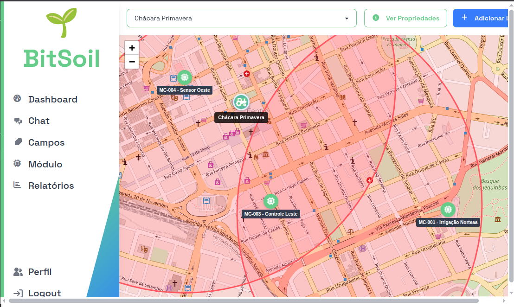
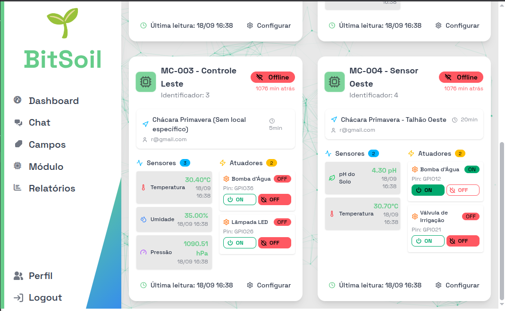
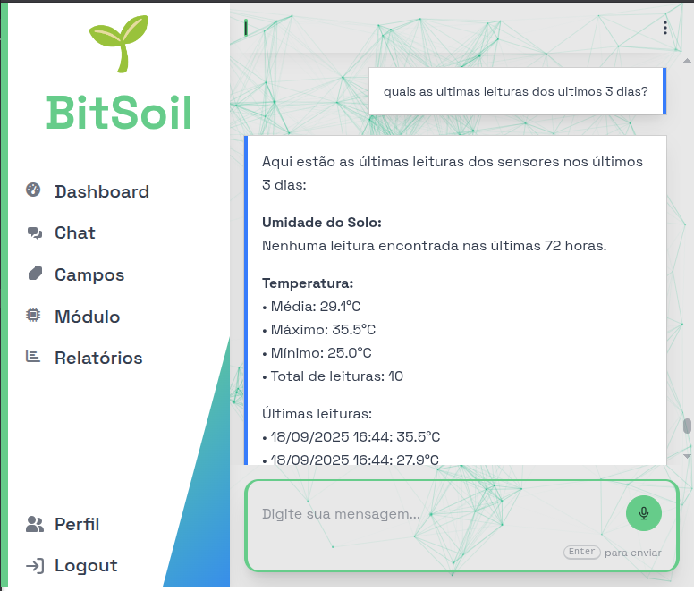
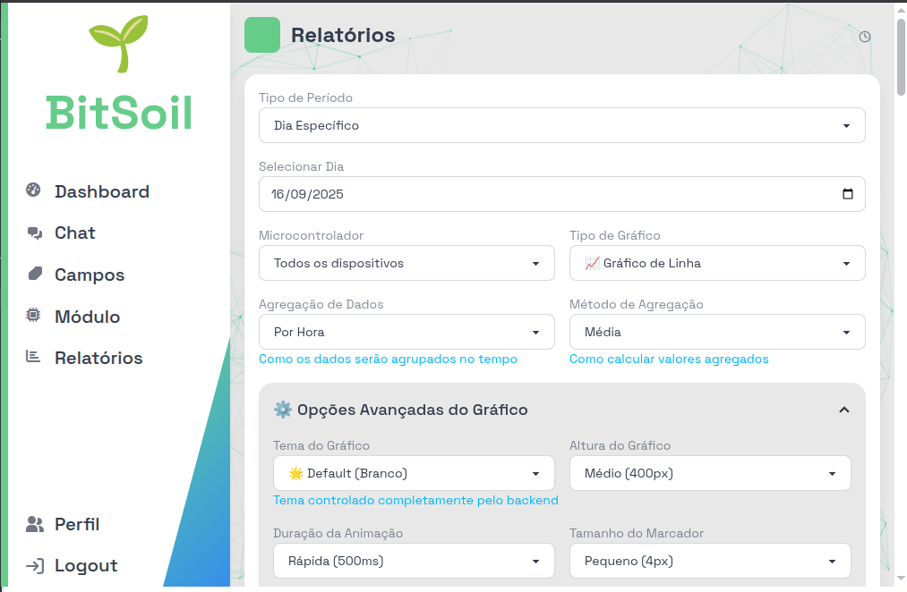
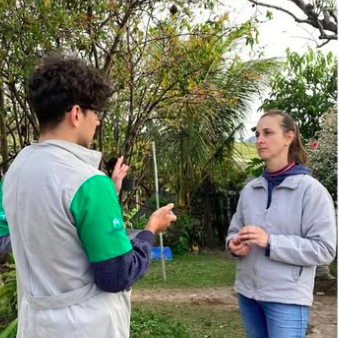
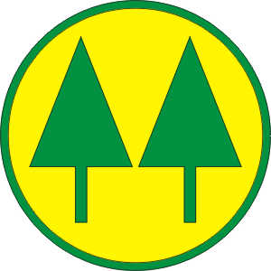
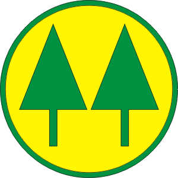
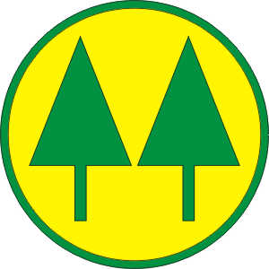

BitSoil Monitoramento Climático Inteligente
O desafio no campo
- Dificuldade de monitoramento climático em tempo real;
- Atraso nas decisões agrícolas por falta de dados;
- As soluções existentes possuem um custo elevado;
- Ineficiência na irrigação por falta de tecnologia;
- Perda de produtividade por manejo inadequado;
Irrigação
~30% da água é desperdiçada por falta de sistemas inteligentes (FAO, 2022).
Produtividade
Até 20% de perdas ocorrem por decisões tardias (EMBRAPA, 2023).
A tecnologia do campo nas mãos do produtor
- Módulos em rede para medir variáveis climáticas;
- Uma estação meteorológica acessível;
- Dados em tempo real e histórico de coleta;
- Sistema para automações integrado;
- Interface web e aplicativo.




Missão, Visão e Valores
Missão
Reduzir custos e melhorar produtividade com monitoramento climático em tempo real.
Visão
Ser referência em monitoramento e automação agrícola para pequenos produtores.
Valores
- Integridade
- Confiabilidade
- Disponibilidade
MVP — Módulo embarcado
- Módulo compacto alimentado com célula fotovoltaica para instalação em campo.
- Monitora pressão, umidade e temperatura atmosféricas; temperatura e umidade do solo; e pode integrar sensores adicionais (pH, NPK).
Comunicação em rede de malha
- Confiabilidade e cobertura ampliada no campo.
- Flexibilidade para expansão por módulos.
- Baixo consumo e resiliência a falhas.
Benefícios Principais
Eficiência de Recursos
Reduza o uso de água e fertilizantes com monitoramento e recomendações precisas.
Irrigação Otimizada
Garanta que suas culturas recebam a quantidade certa de água no momento certo.
Produtividade Aumentada
Alcance maiores rendimentos e culturas de melhor qualidade por meio de dados.
Operação Remota
Monitore suas culturas em tempo real, mesmo em campos extensos.
Para quem é a BitSoil?
- Pequenos e médios produtores
- Instituições de ensino e pesquisa meteorológica
- Cooperativas agrícolas

 


Como monetizar?
- Assinatura mensal para acesso ao sistema.
- Personalizações por necessidade do cliente.
- Locação de módulos adicionais sob demanda.
Próximos passos
- Concluir transição de hardware;
- Integrar modelo de previsão (IA);
- Implantar o sistema em ambiente de produção;
- Modularidade com adaptação pelo cliente.
Wenderson Lopes
Dr. em Engenharia de Controle e Automação
Renan Takeuchi
Eng. Eletricista, especialista em energia solar
Reinaldo Götz Junior
Dr. em Engenharia Elétrica, especialista em eletrônica
Ronald Contijo
Estudante de Engenharia, programador Full Stack
Gustavo Gimenes
Estudante de Engenharia, desenvolvedor de sistemas microcontrolados
Obrigado!
agro.admit.com.br • bitsoilbr@gmail.com